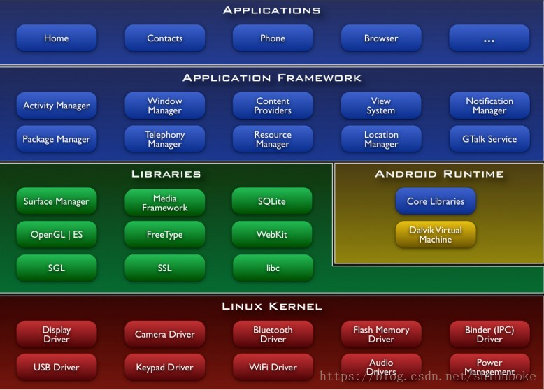

项目架构模式(MVC、MVVM、MVCS、VIPER的选择)
一、概念
没有最好的架构，只有适合自己的业务的架构才是最好的架构，并且它是逐步地变强变大。
架构，又名软件架构，是有关软件整体结构与组件的抽象描述，用于指导大型软件系统各个方面的设计。
二、iOS的系统架构分为四个层次：
核心操作系统层（Core OS layer）、核心服务层（Core Services layer）、媒体层（Media layer）和可触摸层（Cocoa Touch layer）。下面是IOS系统结构图。
 1、Core OS是位于iOS系统架构最下面的一层是核心操作系统层，它包括内存管理、文件系统、电源管理以及一些其他的操作系统任务。它可以直接和硬件设备进行交互。作为app开发者不需要与这一层打交道。
1、Core OS是位于iOS系统架构最下面的一层是核心操作系统层，它包括内存管理、文件系统、电源管理以及一些其他的操作系统任务。它可以直接和硬件设备进行交互。作为app开发者不需要与这一层打交道。
2、Core Services是核心服务层，可以通过它来访问iOS的一些服务。
3、Media是媒体层，通过它我们可以在应用程序中使用各种媒体文件，进行音频与视频的录制，图形的绘制，以及制作基础的动画效果。
4、Cocoa Touch是可触摸层，这一层为我们的应用程序开发提供了各种有用的框架，并且大部分与用户界面有关，本质上来说它负责用户在iOS设备上的触摸交互操作。
iOS是基于UNIX内核，android是基于Linux内核，iOS和android作为两款优秀的手机操作系统，他们有共性有区别，下面分享一张android系统架构图： 
三、常见的分层架构
有三层架构：视图层、业务层、数据层。
也有四层架构：视图层、业务层、网络层、本地数据层。
这里说三层、四层，跟TCP/IP所谓的五层或者七层不是同一种概念。再具体说就是：你的架构在逻辑上设计的是几层那就是几层，具体每一层的名称和作用，没有特定的规范, 这主要是针对模块分类而言的。
1.视图层设计方案
2.网络层设计方案
3.本地持久化方案
4.动态部署方案
上面这四大点，稍微细说一下就是：
- 页面如何组织，才能尽可能降低业务方代码的耦合度？尽可能降低业务方开发界面的复杂度，提高他们的效率？
- 如何让业务开发工程师方便安全地调用网络API？然后尽可能保证用户在各种网络环境下都能有良好的体验？
- 当数据有在本地存取的需求的时候，如何能够保证数据在本地的合理安排？如何尽可能地减小性能消耗？
- iOS应用有审核周期，如何能够通过不发版本的方式展示新的内容给用户？如何修复紧急bug？
四、视图层设计方案
一般来说，一个不够好的View层架构，主要原因有以下五种：
1.代码混乱不规范
2.过多继承导致的复杂依赖关系
3.模块化程度不够高，组件粒度不够细
4.横向依赖
5.架构设计失去传承
View层的代码结构规范 制定代码规范严格来讲不属于View层架构的事情，但它对View层架构未来的影响会比较大，也是属于架构师在设计View层架构时需要考虑的事情。制定View层规范的重要性在于：
1.提高业务方View层的可读性可维护性
2.防止业务代码对架构产生腐蚀
3.确保传承
4.保持架构发展的方向不轻易被不合理的意见所左右
五、架构模式(MVC、MVVM、MVCS、VIPER的选择)
MVC
- 任务均摊–View和Model确实是分开的，但是View和Controller却是紧密耦合的
- 可测试性–由于糟糕的分散性，只能对Model进行测试
易用性–与其他几种模式相比最小的代码量。熟悉的人很多，因而即使对于经验不那么丰富的开发者来讲维护起来也较为容易。 MVVM
任务均摊 – 在例子中并不是很清晰，但是事实上，MVVM的View要比MVP中的View承担的责任多。因为前者通过ViewModel的设置绑定来更新状态，而后者只监听Presenter的事件但并不会对自己有什么更新。
可测试性 – ViewModel不知道关于View的任何事情，这允许我们可以轻易的测试ViewModel。同时View也可以被测试，但是由于属于UIKit的范畴，对他们的测试通常会被忽略。
易用性 – 在我们例子中的代码量和MVP的差不多，但是在实际开发中，我们必须把View中的事件指向Presenter并且手动的来更新View，如果使用绑定的话，MVVM代码量将会小的多。 VIPER
任务均摊 – 毫无疑问，VIPER是任务划分中的佼佼者。
可测试性 – 不出意外地，更好的分布性就有更好的可测试性。
易用性 – 最后你可能已经猜到了维护成本方面的问题。你必须为很小功能的类写出大量的接口。
六、总结
一个好的架构
- 遵循代码规范代码，分类明确(没有难以区分模块的文件夹或模块)
- 注释明了, 逻辑清晰, 不用文档，或很少文档，就能让业务方上手
- 思路和方法要统一，尽量不要多元
- 没有横向依赖，尽可能少的跨层访问
- 对业务方该限制的地方有限制，该灵活的地方要给业务方创造灵活实现的条件
- 易测试，易拓展
- 保持一定量的超前性
- 接口少，接口参数少
- 低内存，高性能